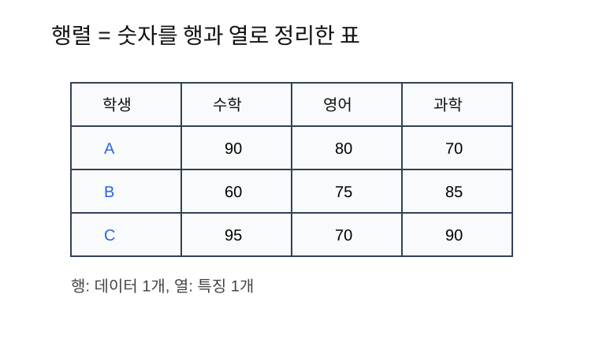
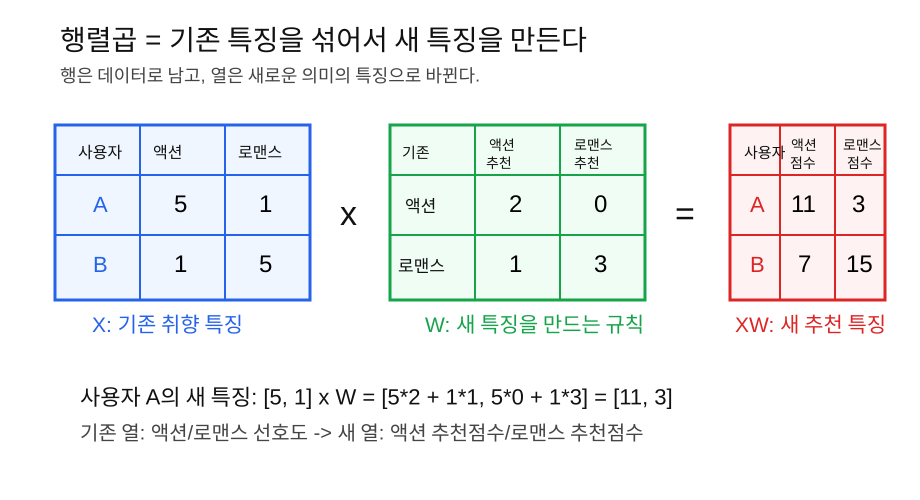
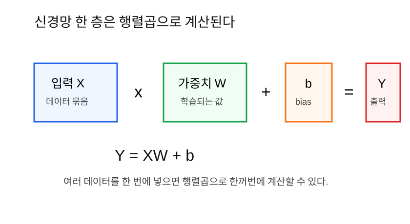

행렬은 벡터 여러 개를 표처럼 묶은 것이고, 신경망은 행렬곱을 이용해 여러 데이터를 한 번에 계산한다.
2단계에서 벡터는 데이터 하나를 숫자 묶음으로 표현하는 방법이라고 했다.
그런데 AI는 보통 데이터 하나만 계산하지 않는다. 사진 1장, 문장 1개만 보는 것이 아니라 수천 개, 수만 개의 데이터를 반복해서 계산한다.
그래서 벡터 여러 개를 한꺼번에 묶어야 한다.
데이터 1개 = 벡터
데이터 여러 개 = 행렬행렬을 쓰면 여러 데이터를 한 번에 계산할 수 있다. 이것이 딥러닝 학습이 빠르게 돌아가는 중요한 이유다.
행렬은 숫자를 행과 열로 정리한 표다.

예를 들어 학생 3명의 시험 점수를 표로 정리해 보자.
| 학생 | 수학 | 영어 | 과학 |
|---|---|---|---|
| A | 90 | 80 | 70 |
| B | 60 | 75 | 85 |
| C | 95 | 70 | 90 |
숫자 부분만 보면 행렬이다.
[
[90, 80, 70],
[60, 75, 85],
[95, 70, 90]
]여기서 행은 학생 한 명, 열은 과목 하나다.
행: 데이터 1개
열: 특징 1개AI에서는 이 생각이 매우 중요하다.
행은 가로줄이다.
[90, 80, 70]열은 세로줄이다.
수학 점수만 모으면 [90, 60, 95]행렬의 크기는 행 개수 x 열 개수로 말한다.
위 학생 점수 행렬은 학생이 3명, 과목이 3개이므로 3 x 3
행렬이다.
이미지 분류 문제를 생각해 보자.
이미지 한 장을 길이 4짜리 벡터로 단순화해 보자.
이미지 1 = [0, 0, 1, 1]
이미지 2 = [1, 0, 1, 0]
이미지 3 = [0, 1, 1, 1]이미지 3장을 한꺼번에 묶으면 행렬이 된다.
X = [
[0, 0, 1, 1],
[1, 0, 1, 0],
[0, 1, 1, 1]
]여기서 X는 입력 데이터 묶음이다.
행: 이미지 한 장
열: 픽셀 또는 특징 하나이처럼 AI에서는 입력 데이터 묶음을 보통 X라고 쓴다.
행렬곱은 행렬끼리 곱하는 계산이다. 그냥 같은 위치끼리 곱하는 것이 아니다.
행렬곱은 다음 규칙으로 계산한다.
왼쪽 행렬의 행과 오른쪽 행렬의 열을 내적한다.
여기서 중요한 점이 있다.
왼쪽 행렬 X는 보통 데이터 묶음이다.
행: 데이터 1개
열: 기존 특징오른쪽 행렬 W는 또 다른 데이터가 아니라, 기존 특징을 새
특징으로 바꾸는 변환 규칙이다.
행: 기존 특징
열: 새 특징을 만드는 규칙따라서 행렬곱은 기존 특징을 없애는 것이 아니다. 기존 특징을 섞어서 새 특징으로 바꾼다.
기존 특징 -> W를 통과 -> 새 특징사용자 2명의 취향 데이터가 있다고 하자.
| 사용자 | 액션 선호도 | 로맨스 선호도 |
|---|---|---|
| A | 5 | 1 |
| B | 1 | 5 |
이 데이터는 행렬 X로 쓸 수 있다.
X = [
[5, 1],
[1, 5]
]여기서 각 행은 사용자 1명이고, 각 열은 기존 특징이다.
[5, 1] = 액션을 많이 좋아하고 로맨스는 조금 좋아하는 사용자
[1, 5] = 액션은 조금 좋아하고 로맨스를 많이 좋아하는 사용자이제 기존 특징을 새 추천 점수로 바꾸고 싶다.
새 특징 1: 액션 블록버스터 추천 점수
새 특징 2: 로맨스 영화 추천 점수이를 만드는 가중치 행렬 W를 다음처럼 정한다.
W = [
[2, 0],
[1, 3]
]이 W는 이렇게 읽는다.
| 기존 특징 | 액션 블록버스터 점수에 주는 영향 | 로맨스 영화 점수에 주는 영향 |
|---|---|---|
| 액션 선호도 | 2 | 0 |
| 로맨스 선호도 | 1 | 3 |
즉 액션 블록버스터 점수는 액션 선호도를 크게 보고, 로맨스 선호도도 조금 본다.
액션 블록버스터 점수 = 액션 선호도*2 + 로맨스 선호도*1로맨스 영화 점수는 로맨스 선호도를 크게 본다.
로맨스 영화 점수 = 액션 선호도*0 + 로맨스 선호도*3이제 XW를 계산해 보자.
사용자 A의 새 특징:
[5, 1] x W
액션 블록버스터 점수 = 5*2 + 1*1 = 11
로맨스 영화 점수 = 5*0 + 1*3 = 3
사용자 A의 새 특징 = [11, 3]사용자 B의 새 특징:
[1, 5] x W
액션 블록버스터 점수 = 1*2 + 5*1 = 7
로맨스 영화 점수 = 1*0 + 5*3 = 15
사용자 B의 새 특징 = [7, 15]그래서 결과는 다음과 같다.
XW = [
[11, 3],
[7, 15]
]행은 그대로 사용자 A, 사용자 B를 뜻한다. 바뀐 것은 열이다.
곱하기 전 열: 액션 선호도, 로맨스 선호도
곱한 후 열: 액션 블록버스터 점수, 로맨스 영화 점수즉 행렬곱은 데이터를 없애는 계산이 아니라, 데이터의 특징 표현을 바꾸는 계산이다.
[0, 1], [1, 0] 같은 예제도 쓸 수 있다. 다만
처음 행렬곱을 배울 때는 의미가 잘 안 보일 수 있다.
예를 들어 다음 벡터는 one-hot 표현이다.
[1, 0] = 액션 장르
[0, 1] = 로맨스 장르이런 표현은 “둘 중 하나를 고르는 상황”에는 좋다. 하지만 행렬곱이
특징을 어떻게 섞어서 새 특징을 만드는지 보여주기에는
[5, 1], [1, 5]처럼 선호도 크기가 있는 예제가
더 이해하기 쉽다.
따라서 처음에는 이렇게 생각하면 된다.
0과 1 예제: 분류, 선택, one-hot을 설명할 때 좋다.
5와 1 같은 점수 예제: 특징이 섞이고 변환되는 것을 설명할 때 좋다.모든 행렬을 곱할 수 있는 것은 아니다.
(m x n) 행렬 x (n x k) 행렬 = (m x k) 행렬가운데 숫자가 같아야 곱할 수 있다.
예를 들어,
3 x 4 행렬 x 4 x 2 행렬 = 3 x 2 행렬이것은 가능하다. 가운데 숫자 4가 같기 때문이다.
하지만,
3 x 4 행렬 x 2 x 5 행렬이것은 불가능하다. 가운데 숫자 4와 2가
다르기 때문이다.
신경망 한 층은 보통 다음처럼 쓴다.
Y = XW + b
각 기호의 의미는 다음과 같다.
| 기호 | 의미 |
|---|---|
X |
입력 데이터 묶음 |
W |
가중치 행렬 |
b |
bias |
Y |
출력 |
이 식은 어려워 보이지만 뜻은 단순하다.
입력 데이터를 가중치와 곱하고, bias를 더해서 출력한다.2단계에서 뉴런 하나는 다음처럼 계산한다고 했다.
z = x · w + b뉴런이 하나라면 가중치 w는 벡터 하나면 된다.
그런데 실제 신경망에는 뉴런이 여러 개 있다.
뉴런 1의 가중치:
w1 = [2, 1]뉴런 2의 가중치:
w2 = [0, 3]이 가중치들을 열로 묶으면 가중치 행렬 W가 된다.
W = [
[2, 0],
[1, 3]
]즉 W는 여러 뉴런의 가중치를 한꺼번에 담은 표다. 각 열은
새 특징 하나를 만드는 규칙이다.
입력 데이터가 하나 있다고 하자. 이 데이터는 어떤 사용자의 영화 취향이다.
x = [5, 1]첫 번째 숫자는 액션 선호도, 두 번째 숫자는 로맨스 선호도다.
뉴런이 2개 있다.
뉴런 1: 액션 블록버스터 점수를 만든다.
뉴런 2: 로맨스 영화 점수를 만든다.이것을 가중치 행렬로 묶으면 다음과 같다.
W = [
[2, 0],
[1, 3]
]이제 xW를 계산한다.
xW = [5, 1] x [
[2, 0],
[1, 3]
]첫 번째 출력:
5*2 + 1*1 = 10 + 1 = 11두 번째 출력:
5*0 + 1*3 = 0 + 3 = 3그래서 결과는 다음과 같다.
xW = [11, 3]여기에 bias를 더한다.
b = [1, -1]y = xW + b = [11, 3] + [1, -1] = [12, 2]즉 입력 하나가 뉴런 2개를 지나면서 새 특징 2개로 바뀌었다.
기존 특징: [액션 선호도, 로맨스 선호도]
새 특징: [액션 블록버스터 점수, 로맨스 영화 점수]입력 데이터가 두 개 있다고 하자.
X = [
[5, 1],
[1, 5]
]가중치와 bias는 그대로 쓴다.
W = [
[2, 0],
[1, 3]
]
b = [1, -1]첫 번째 데이터의 출력은 앞에서 계산했다.
[5, 1]W + b = [12, 2]두 번째 데이터도 계산해 보자.
[1, 5]W = [
1*2 + 5*1,
1*0 + 5*3
][1, 5]W = [7, 15]b를 더하면 다음과 같다.
[7, 15] + [1, -1] = [8, 14]따라서 전체 출력은 다음과 같다.
Y = [
[12, 2],
[8, 14]
]행렬곱을 쓰면 데이터 2개를 한 번에 계산할 수 있다. 행은 여전히 사용자 2명을 뜻하고, 열은 새 추천 점수 2개를 뜻한다.
AI 학습에서 batch는 한 번에 계산하는 데이터 묶음이다.
예를 들어 이미지 1000장이 있어도, 한 번에 32장씩 계산할 수 있다.
전체 데이터: 1000장
batch size: 32
한 번 계산할 때 입력 X의 행 개수: 32batch를 쓰는 이유는 다음과 같다.
import numpy as np
X = np.array([
[5, 1],
[1, 5],
])
W = np.array([
[2, 0],
[1, 3],
])
b = np.array([1, -1])
Y = X @ W + b
print(Y)
# [[12 2]
# [ 8 14]]@는 Python에서 행렬곱을 뜻한다.
PyTorch에서는 거의 같은 방식으로 쓴다.
import torch
X = torch.tensor([
[5.0, 1.0],
[1.0, 5.0],
])
W = torch.tensor([
[2.0, 0.0],
[1.0, 3.0],
])
b = torch.tensor([1.0, -1.0])
Y = X @ W + b
print(Y)| 헷갈리는 말 | 쉽게 풀어쓴 말 |
|---|---|
| 행렬 | 숫자를 행과 열로 정리한 표 |
| 행 | 가로줄, 보통 데이터 1개 |
| 열 | 세로줄, 보통 특징 1개 |
| 행렬곱 | 왼쪽 행과 오른쪽 열을 내적하는 계산 |
| 가중치 행렬 W | 여러 뉴런의 가중치를 모아둔 표 |
| batch | 한 번에 계산하는 데이터 묶음 |
X에서 행은 보통 무엇을 뜻하는가?3 x 4 행렬과 4 x 2 행렬을 곱하면 결과
크기는 무엇인가?Y = XW + b에서 W는 무엇인가?행렬은 벡터 여러 개를 표로 묶은 것이다. AI에서는 행 하나가 데이터
하나, 열 하나가 특징 하나인 경우가 많다. 신경망 한 층은
Y = XW + b로 표현할 수 있고, 이 식은 여러 데이터를 여러
뉴런에 한꺼번에 통과시키는 행렬곱 계산이다.
다음 노트: 04_선형변환